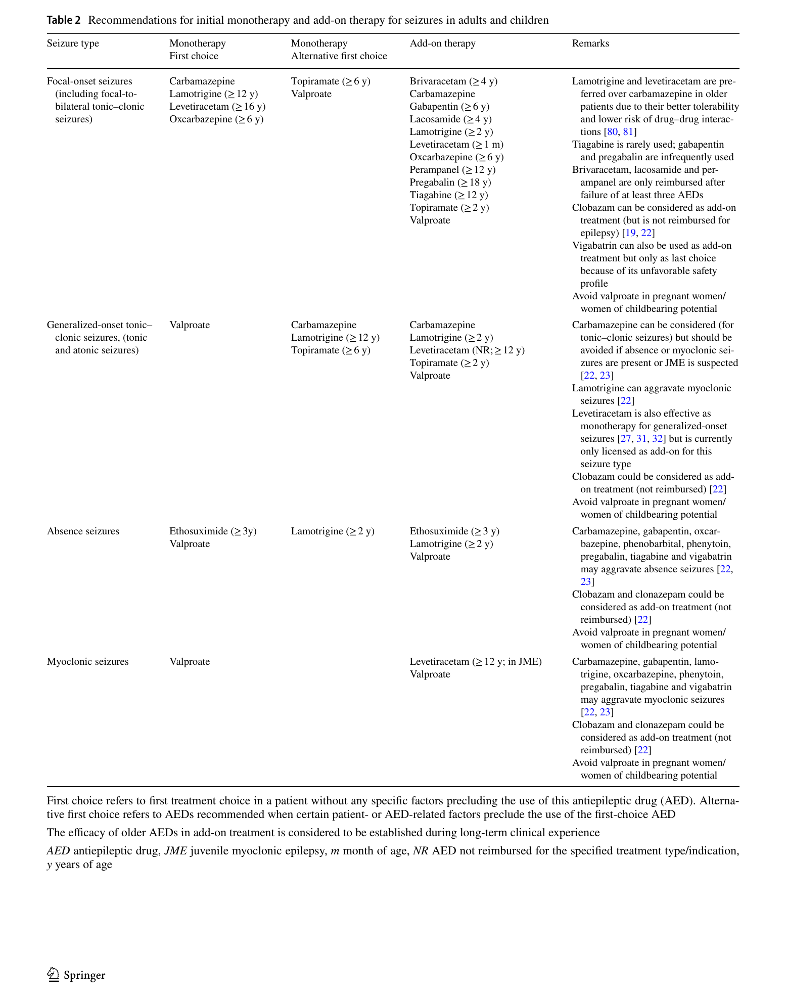

Erro comum desmontado · Pág. 13 de 20
Tabelão AED: a mesma droga salva a focal e piora a mioclonia
“Carbamazepina na mioclonia não é ‘quase certo’ — pode piorar.” A escolha do AED não é “unidunitê”: a droga que é 1ª linha da focal pode causar a crise de outro tipo. O tipo de crise manda na droga.
Por isso classificar pelo início (página 8) não é luxo — é o que decide a receita. Aqui está o tabelão de prova: o que é 1ª linha de cada tipo, o que é teratogênico, e o que piora em vez de tratar.
Tabelão âncora · AED por tipo de crise
| Tipo de crise | 1ª linha (prova) | Notas |
|---|---|---|
| TCG generalizada | VPA · LTG · LEV | VPA mais teratogênico; LTG/LEV em gravidez/idoso |
| Focal (± consciência) | CBZ · OXC · LTG | VPA é 2ª linha |
| Mioclônica / atônica | VPA · TPM · LEV | CBZ e PHT pioram a mioclonia |
| Ausência típica | ETX · VPA · LTG | ETX é específica |
| Gravidez / idade fértil | preferir LTG · LEV | evitar VPA |
Tipo de crise manda na droga
A escolha do AED depende do tipo de crise (por isso classificar). Um AED mal escolhido pode piorar a epilepsia — não é “unidunitê”. Qualquer crise pode terminar em TCG → como começou define o tratamento de base.
Gap declarado: as doses de manutenção crônica não vêm de forma substantiva na fonte — não inventar. O tabelão é de escolha por tipo, não de posologia.
TCG e gravidez
TCG — 1ª linha marcante de prova: valproato, lamotrigina, levetiracetam. O valproato tem mecanismo amplo, é 1ª linha em várias crises — e é o mais teratogênico entre os discutidos.
Regra / pegadinha: evitar valproato em grávida / cuidado extremo em idade fértil. Lamotrigina e levetiracetam são os menos teratogênicos — preferência em mulher em idade fértil/grávida no discurso de prova. LTG e LEV ainda têm o melhor perfil de interação, comorbidades e idosos.
Focal
Focal (com ou sem perda de consciência — não importa): 1ª linha de prova carbamazepina, oxcarbazepina, lamotrigina; o valproato entra como 2ª linha.
Mioclônica/atônica e o que piora
Mioclônica / atônica: 1ª linha valproato, topiramato, levetiracetam.
Pegadinha de ouro · CBZ e PHT pioram a mioclonia
A carbamazepina pode causar/piorar mioclonia. A fenitoína (muito usada na emergência; boa em focal) também pode causar mioclonia. A droga que salva a focal é a que agrava a mioclônica — classificar pelo início evita a troca.
Ausência e etosuximida
Ausência típica: só etosuximida, valproato, lamotrigina. Regra: a etosuximida é específica para a ausência (mecanismo da ausência; não o da TCG/focal/mioclônica).

Resumo operacional
Tipo manda; VPA teratogênico; CBZ/PHT pioram mioclonia; ETX específica da ausência.
Por que importa
A banca adora a pegadinha da carbamazepina na mioclonia e do valproato na grávida — são os dois erros de receita que mais caem.
Quiz
Conexão
As síndromes são os pacotes que combinam idade, EEG e 1ª droga — e a primeira delas é a do lactente com espasmos.